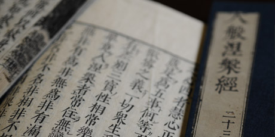
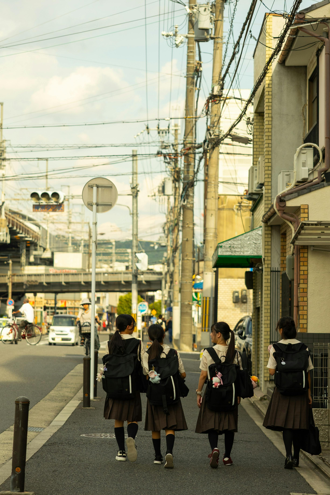
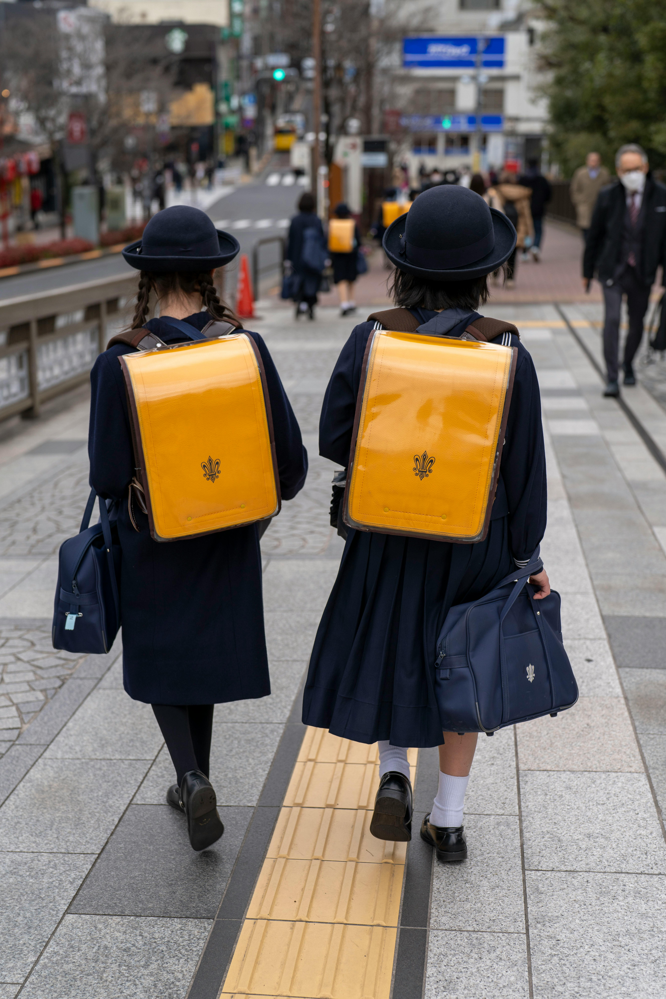
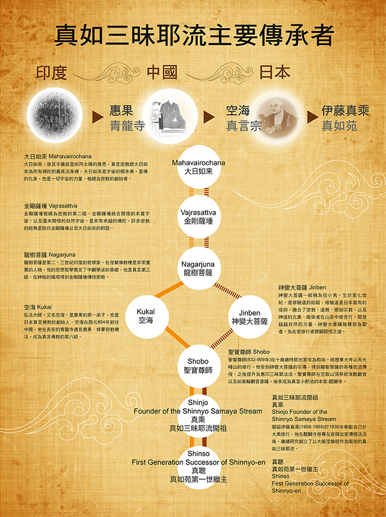
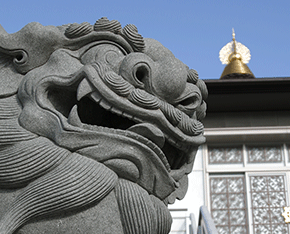
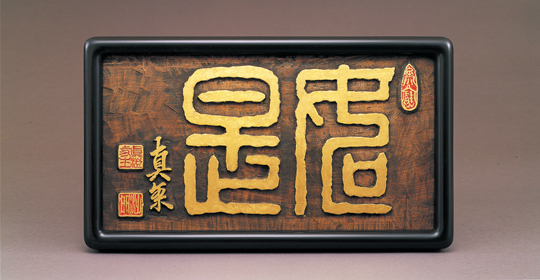

01
涅槃根本
大般涅槃經的智慧
真如苑以《大般涅槃經》為修行根本，教導一切眾生皆有佛性、 皆能成佛的平等智慧。課程場域的沉靜與專注，也象徵青年在學習中 一步步走入經典、沉澱自心。



傳承主軸・四大精神
真如苑的青年培育，不只是知識理解，更是透過真實體驗， 讓學子在活動中感受經典、認識傳承、實踐利他、鍛鍊心志。

真如苑以《大般涅槃經》為修行根本，教導一切眾生皆有佛性、 皆能成佛的平等智慧。課程場域的沉靜與專注，也象徵青年在學習中 一步步走入經典、沉澱自心。

密教修行重視法流傳承，從前輩承接智慧，再把責任與關懷傳遞給後輩。 青年並肩同行的畫面，比單純風景更貼近這份一起走下去的傳承意象。

利他不是抽象口號，而是在陪伴、接納與互助之中實際展現。 以人與人之間真實的笑容和連結，來對應慈悲供施的行動精神。

修行之路不會永遠平順，但正因為有高低起伏，才更能看見內在的穩定。 道路穿越山谷的畫面，較能傳達面對考驗仍然前行的不動心精神。
歷年紀錄
「這個夏令營讓我第一次感受到，修行不是大人的事， 也不是未來的事，而是現在、這個當下，我就能開始的事。」


「歷年照片、影片、活動紀錄，是這條傳承路上每位青年留下的足跡， 也是後來者最好的引路燈。」
報名資訊
留下您的資訊，由工作人員依需求提供最適合的課程說明與活動時間。